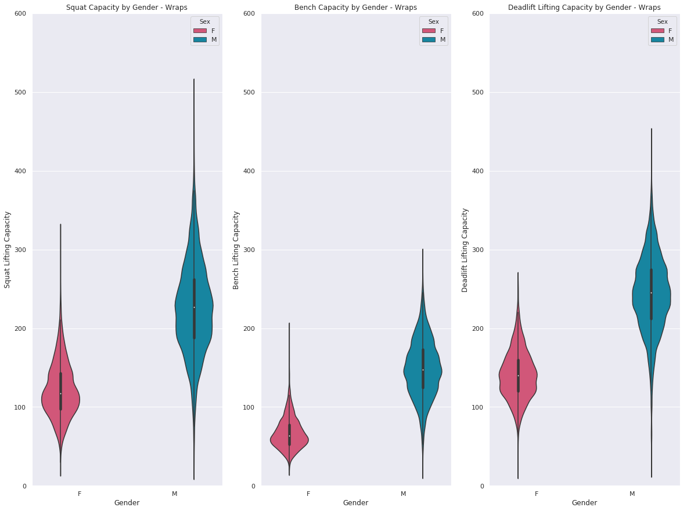
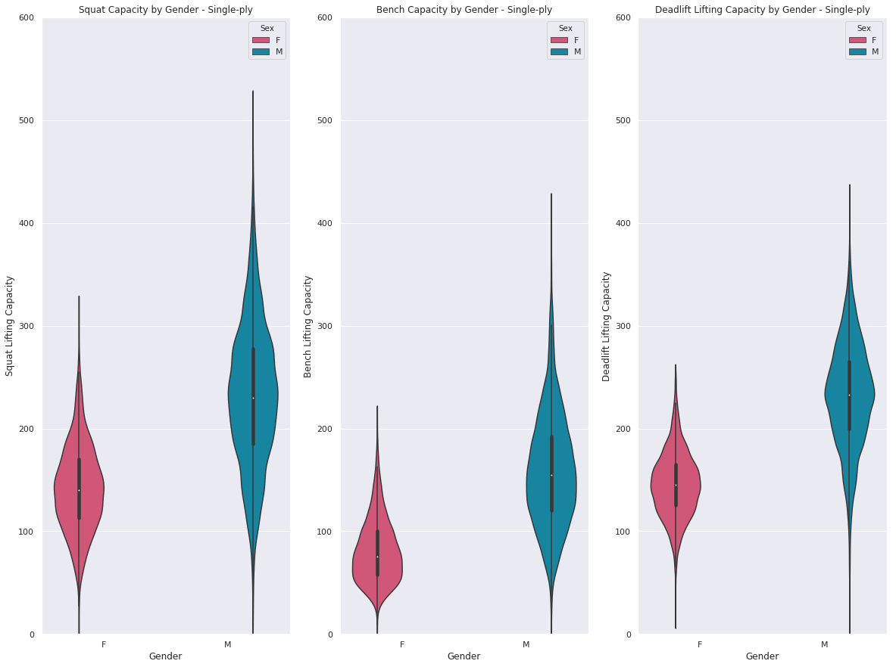
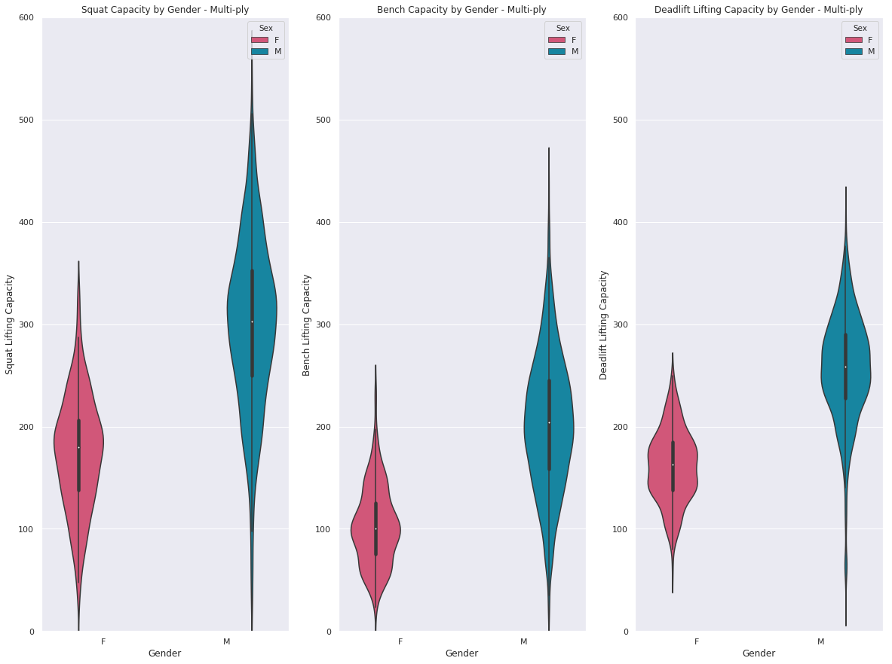

Наблюдения относно безекипировъчен трибой
Графиките, които съпоставят различните движения спрямо теглото и възрастта на състезателя се отнасят за състезателите без екипировка.
Очаквано постиженията на клек са по-високи при състезателите с по-голямо лично тегло. На графиката се вижда, че клека при мъжете е по-висок спрямо този при жените
С напредването на възрастта се забелязва спад в постиженията на клек и на двата пола, като при жените е по-ясно изразен.
Постиженията на вдигането от лег се подобряват с покачване на лично тегло, като напредъка е доста по-осезаем при мъжете.
Противно на очакванията, постиженията на вдигането от лег се подобряват с напредването на възрастта на съзтезателите.
И при мъртвата тяга се наблюдава подобряване на постиженията при покачване на лично тегло. Както при другите движения, при мъжете е по-ясно изразено подобряването.
При мъртвата тяга се наблюдава запазване или много лек спад на постиженията при напредването на възрастта.
Предвид факта, че на всичките движения се подобряват постиженията с покачване на лично тегло, е очаквано и трибоя да се покачи. Интересно е, че при мъжете е доста по-силно изразено покачването на трибоя.
Лявата графика показва, че трибоя се запазва, дори покачва в някои случай с възрастта при мъжете. При жените се забелязва спад в постиженията.
При съпоставянето на трите линии за клек, лег и тяга спрямо възрастта на състезателите се вижда по-ясно отношението на трите движения във времето. От графиката за мъжете може да се предположи, че растежа на вдигането от лег може да компенсира за спада в клека и това обяснява запазването (и лекото подобряване) на трибоя. При жените се забелязва много по-остър спад в клека, докато прогреса на лега е минимален.
Графиката за мъжете ясно показва, че при достатъчно високо лично тегло, клека може да надмине мъртвата тяга. Това обикновено се обяснява със факта, че при натрупването на маса става по-трудно влизането в силна позиция за мъртвата тяга, докато тази маса помага за стабилността при клека.При жените се наблюдава почти постоянна разлика между клека и мъртвата тяга
Графиката показва зависимостта за това клека да е по-нисък от тягата. При мъжете се наблюдава, че максималното постижение на клек е над това на тяга. Този факт беше загатнат в графиката с линиите на регресия. Средното при вдигането от лег на жените е почти двойно по-ниско при жените от това при мъжете.
При съзтезанията с бинтове за клек се наблюдава логично увеличение на клека, като средното постижение почти изравнява това на тяга.
Най-голяма помощ от екипировката се получава при трикото за клек и блуза за лег. На база на това се наблюдава още по-голям ръст на постиженията при тези две движения. Лежанката е доста по-близо до другите две движения при еднослойната екипировка.
При многослойната екипировка се наблюдава значително увеличение на постиженията при вдигането от лег, като максималното изпреварва това на тягата. Средният клек също надвишава средната тяга. Интересното е, че максималният клек наближава 600кг.